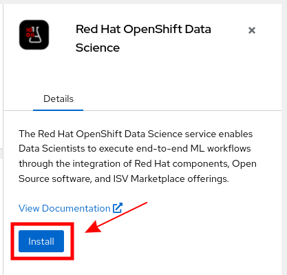

Install RHODS AddOn
Log in to console.redhat.com
Make sure you are logged in https://console.redhat.com/.
If not already done, go to https://console.redhat.com/ and log in with your Red Hat account. Once you are logged in, navigate to the OpenShift Section. (https://console.redhat.com/openshift). You should see your cluster(s).
Display detailed instructions:


Locate RHODS Add-on
-
Select your Cluster in the list
-
Navigate to the Add-ons tab
-
You should the the Red Hat OpenShift Data Science add-on

Prerequisites not met
-
It is possible that your cluster does not meet the pre-requisites.
-
If that is the case, the RHODS add-on will look like:

-
Clicking on the add-on and choosing the Prerequisite tab should display more details:

-
In a case such as this one, you would have to add more machines to the cluster.
Go to the Machine Pool tab Click Add Machine Pool Machine Pool Name: Worker Node Instance Type: Select in the Drop Down → Select the Enter Enter Click Add Machine Pool
Click here if you need help on how to add a new MachinePool for RHODS
m5-2xlargem5.2xlargeEnable Auto-Scaling Option0 as minimum2 as maximum
Install
If your cluster meets the minimum pre-requisites, you can move on to the Installation part:
-
Click the RHODS add-on
-
Click the Install Button
 -
Enter your email address

-
And click Install
-
The Add-on is now installing. This should last around 30-45 minutes

-
Wait until the Add-on is fully Installed